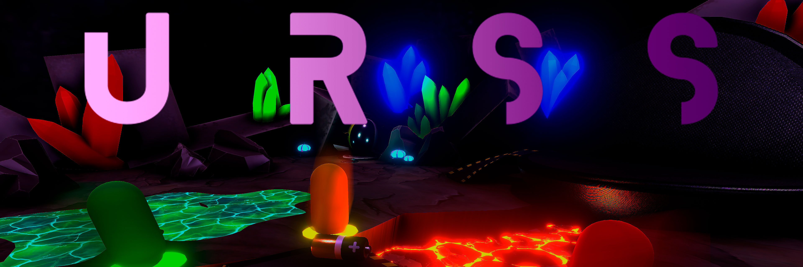
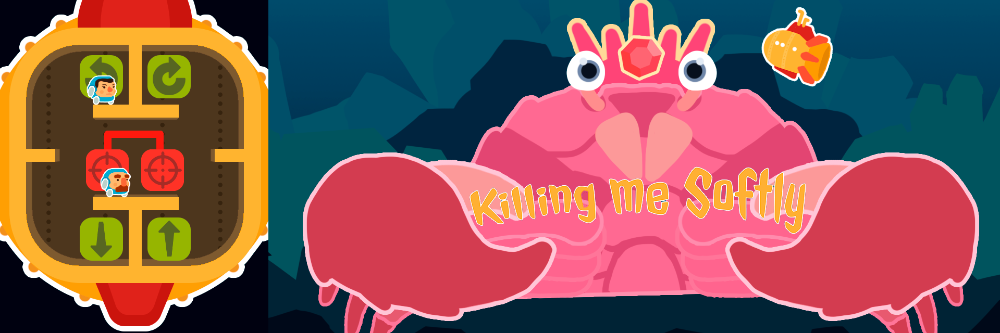
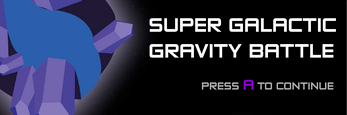

Hi, welcome to my portfolio. I'm a game designer with a software engineering background About Me
About Me
My name is Enrique. I'm a game designer with a software engineering background. I'm a junior developer with experience in game development development and AR/XR/VR technologies.
Over the last years I had participated in three videogames at university (two on degree and on master). The first one, was a small horror game made in Unity, I worked as programmer,
implementing game mechanics and assembling the level. The second one, is a VR PVP Multiplayer game made in Unreal 4, I worked as programmer (mainly implementing game mechanics) and as producer.
And the third one, during the Master, an Online Multiplayer BattleRoyale made in Uneral 4, that we continue developing. Worked as game designer, mainly designing and prototyping gameplay and UI.
I have experience working with multiple programming language, game engines, software design and tools like Git, Photoshop or VS. And the ability to create clean and fast code, knowledge of the game design
principles and the ability to communicate my design vision and accept feedback and changes about my work. I am hardworking, eager to learn and a team player.
Games
Professional games I've worked on.
Title: Blackstorm Development: February 2019 - Present Store: Steam (December 2020) Team: 18 members Engine: Unreal Engine 4
An online multiplayer Battle Royale where the players form crews of three pirates face each other in deadly combat. Sail with your space ship in a
three-dimensional environment with total freedom of movement and rotation. Loot, equip your ship, shoot your cannons, board the enemy, sabotage their ship
and raze them. The last crew win. Work as Game Designer (Technical). Started the game form scratch, designing the main core, game systems, features and gameplay. Prototyping most of the
mechanics in UE4 blueprints. Especially focused on gameplay design and prototype, system design and UI design (prototype and implementation).
Projects
Personal projects and games. Made by my own or in a small team.
Title: Immortal Development: 2017 - 2018 Team: 10 members Engine: Unreal Engine 4
VR asynchronous PvP multiplayer game for two players, that play in the same system (same PC). Inspired in the classic table RPG games,
one of the players (VR) is trapped in a dungeon and must get out. The other (gamepad & screen), the master of the dungeon,
must prevent it by casting spells, spawning enemies or planting traps. Work as Programmer and Producer. As programmer implementing the main gameplay and features. Focused on the player with no VR, implementing
the base character system and the abilities system. As producer my job was to create the production plans, manage the team and organize the
events we assist, like expos or conferences.
Title: iCuentoInteractivo Development: 2017 Team: 7 members Engine: Unity
Small interactive book developed during my software engineering degree. Uses and explore some of the basic interactions Android offers, like: touch, sound, accelerometers, etc. Work as Programmer and designer. Implementing and designing the features and interactions.
Title: The Unwanted Dream Development: 2015 - 2016 Team: 9 members Engine: Unity
First person survival horror game. Very inspired by P.T, the player is a little child that must survive in his own home, in a bad dream. With
only one mechanic, covering his face with his hand when he is afraid. Using it to solve the different situations. Every time the player dies, the
dream starts over. Work as Programmer. Implementing the features and gameplay (scripting). First game I develop.
Prototypes
Developed to test mechanics and game ideas, plus learning and practicing with game engines, tools and different approaches.
Title: Shooter Project Development: 1 month, 2019 Engine: UE4 Third party content: Assets, fonts and music. Documentation: Prototype Document
Small game made to test a game mechanic and to practice the design and implementation of game systems, game design and implementation made by my own. Fast paced
First Person Shooter where the player can modify his weapon behavior thanks to a weapons modifications tree. The player can use three different weapons,
being able to modify each weapon independently.
Title: Elements Project Development: 2 weeks, 2019 Engine: UE4 Third party content: Paragon assets, fonts and music. Documentation: Prototype Document
Small game made to test a game mechanic, game design and implementation made by my own. The game´s main mechanic is an iteration over ProjectNinja´s (other of my prototypes)
main mechanic. The player must change between three states to use the ability related to each of them. When the player changes into a state or uses the ability, the resistance
to that state is reduced, when it reaches 0 a negative effect is applied to the player. The player must kill enemies to regenerate the resistances.
Title: Pacman: Metamorph Development: 1 weeks, 2019 Engine: Unity Third party content: Fonts and music. Documentation: Prototype Document
Small game made to test a game mechanic, game design and implementation made by my own. Game based on the original Pacman game. The game includes a new main mechanic,
the player can change his color matching the ghosts color. When the player has the same color of a ghost this ghost can’t eat him, and during the effect of a special
pill, the player can eat this ghost.
Title: Ninja Warrior Fighter Development: 2 weeks, 2018 Engine: Unity Third party content: Assets (Polygon), fonts and music.
Small game made for the Unity class, game design and implementation made by my own. Classic third person endless arcade kill-em-all, where
the player have tree abilities, but cannot use them in a row. Each ability is better in certain situations: getting away, short distance or
large distances.
Game Jams

Title: URSS Game Jam: Game Jamon 2020 (Global Game Jam 2020) Team: 7 members Engine: Unity 3D
Ultimate Repair Space System is a 4 person pvp game where you must compete versus other astronauts to gather the parts needed to repair your space ship.
The movement is tricky, as all players play on the same keyboard using only one key each. Every player has a pointer that moves around their character,
and whenever they press their key, they will move towards direction the pointer was when the key was pressed.
The goal is to collect a series of tools and spare parts and bring them back to your broken ship, avoiding other players as they can steal the part you are carrying.

Title: Killing Me Softly Game Jam: Talentum Game Jam 2018 Team: 3 members Engine: Unity 3D
Local multiplayer cooperative game, where each player controls a character like in a platformer. They are inside a submarine which they
control by interacting with various buttons scattered throughout the submarine, by standing in front on it. They will fight a very big crab, dodging
the attacks and killing him with the submarine weapons.
Title: The Beat Game Jam: TrainJam 2018 Team: 4 members Engine: Unreal Engine 4
First person shooter adventure game, where the player is a vaccine. His mission is to find his way through the host's veins, killing al the
diseases while tries to reach the heart and kill the final boss, a unwelcome tumor that will kill the host.
Title: Mana4Life Game Jam: Ludum Dare 40 Team: 4 members Engine: Unreal Engine 4
Third person endless arcade kill-em-all game. Where the player have 3 spells that should be used to kill the enemies that will come in waves. The mana
(used for the abilities) and the health are opposed, which means that if you use mana, your health increases, and if you get hurt, your mana increases.
Being essential to maintain the equilibrium between both.

Title: Super Space Gravity Battle (SGGB) Game Jam: Ludum Dare 39 Team: 7 members Engine: Unity 3D
Local 2D multiplayer PVP game. The players will fight while they float in space, shooting each other projectiles. There are some planets in the level
with theirs own gravity, allowing the player to use the gravity of the nearest to help him to move through the map. But he must be careful, as
the projectiles are also affected by the gravity.
Title: TrainJam Defender Game Jam: Train Jam 2017 Team: 6 members Engine: Unity 3D
Tower defense in a train, train defense. The player will build his own train by buying the different types o wagons to protect the train. Each wagon
have his own characteristics that are better according to situation, the player must create the train as balance as possible. After the train is build
it will be attacked and the player should defend it, by using the left and right keys to slow down or speed up, to avoid the enemies.